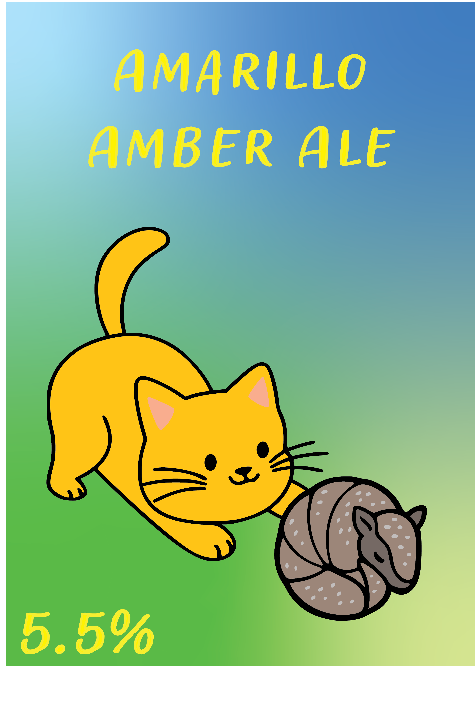
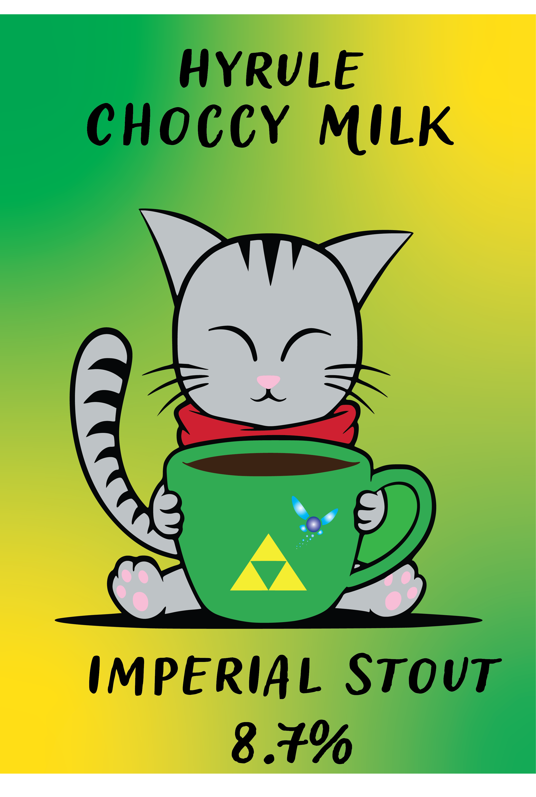

Mein Bier Projekt
Da ich sehr gerne spezielle Biere geniesse hat mich das Bier brauen schon länger interessiert.
Als ich mich über Weiterbildungen informiert habe und wusste, dass ich mich im Design / Grafischen Bereich weiterbilden möchte habe ich öfters gesehen, dass ein Portfolio gewünscht ist.
Da ich selbst kein Portfolio hatte, in dem ich Werke von mir zeigen könnte, kam ich auf die Idee, Bier zu brauen und Ettiketten zu den gebrauten Bieren zu gestalten.
So konnte ich diverse Gestaltungstools verwenden und meine Skills mit zeichnen, Typographie und SVG-Grafiken zu vertiefen.
Wenn ich ein Bier kaufe, neige ich oft dazu, dass ich witzige und elegante Ettiketten als erstes betrachte, erst danach auf den Bierstil und die Hopfenbeigaben.
Deshalb wollte ich auch etwas witziges machen mit meiner "Brauerei".
Zuerst wollte ich mit meinem Namen, den ich im Internet oft verwende, etwas machen. "Ithildin" bedeutet Mondscheinfunke. Daher war mein erstes konzept, dass ich all meine Ettiketten zum Thema "Galaxie" widme. So entstanden meine ersten zwei Ettiketten und deren Varianten:
Als ich mich über Weiterbildungen informiert habe und wusste, dass ich mich im Design / Grafischen Bereich weiterbilden möchte habe ich öfters gesehen, dass ein Portfolio gewünscht ist.
Da ich selbst kein Portfolio hatte, in dem ich Werke von mir zeigen könnte, kam ich auf die Idee, Bier zu brauen und Ettiketten zu den gebrauten Bieren zu gestalten.
So konnte ich diverse Gestaltungstools verwenden und meine Skills mit zeichnen, Typographie und SVG-Grafiken zu vertiefen.
Wenn ich ein Bier kaufe, neige ich oft dazu, dass ich witzige und elegante Ettiketten als erstes betrachte, erst danach auf den Bierstil und die Hopfenbeigaben.
Deshalb wollte ich auch etwas witziges machen mit meiner "Brauerei".
Zuerst wollte ich mit meinem Namen, den ich im Internet oft verwende, etwas machen. "Ithildin" bedeutet Mondscheinfunke. Daher war mein erstes konzept, dass ich all meine Ettiketten zum Thema "Galaxie" widme. So entstanden meine ersten zwei Ettiketten und deren Varianten:


{kind=link}
Später hatte ich eine andere Idee, die meine Persönlichkeit noch etwas mehr einbringen sollte.
Da ich Katzen sehr mag, werde ich unter meinen freunden oft als "Crazy Catlady" bezeichnet. Daher kam mir die Idee, meine bescheidene Hausbrauerei "Crazy Catlady Brewery" zu nennen.
Hier war die Grundidee zukünftig auf jeder Ettikette eine Katze zu haben um ein gemeinsames Thema, sowie Wiedererkennungs Wert zu haben.
So entstand folgendes Logo und die Ettiketten der nächsten Biere:
Da ich Katzen sehr mag, werde ich unter meinen freunden oft als "Crazy Catlady" bezeichnet. Daher kam mir die Idee, meine bescheidene Hausbrauerei "Crazy Catlady Brewery" zu nennen.
Hier war die Grundidee zukünftig auf jeder Ettikette eine Katze zu haben um ein gemeinsames Thema, sowie Wiedererkennungs Wert zu haben.
So entstand folgendes Logo und die Ettiketten der nächsten Biere:




Die folgenden Bilder habe ich an einem "Brew Day" gemacht. Das Bier das hier entstanden ist, heisst "Hyrule Choccy Milk" und es ist ein Chocolate-Milk-Stout.
In der Zutatenliste befinden sich Cacao-Nibs für den Schokoladengeschmack. Vanillebohnen und Kaffebohnen unterstützen den Schokoladigen geschmack und bringen tiefe in den Geschmack.
Bei der Hopfenzugabe habe ich darauf geachtet, dass ich leicht süssliche Aromen herausgesucht habe, sowie leichte Vanillearomen.
In der Zutatenliste befinden sich Cacao-Nibs für den Schokoladengeschmack. Vanillebohnen und Kaffebohnen unterstützen den Schokoladigen geschmack und bringen tiefe in den Geschmack.
Bei der Hopfenzugabe habe ich darauf geachtet, dass ich leicht süssliche Aromen herausgesucht habe, sowie leichte Vanillearomen.